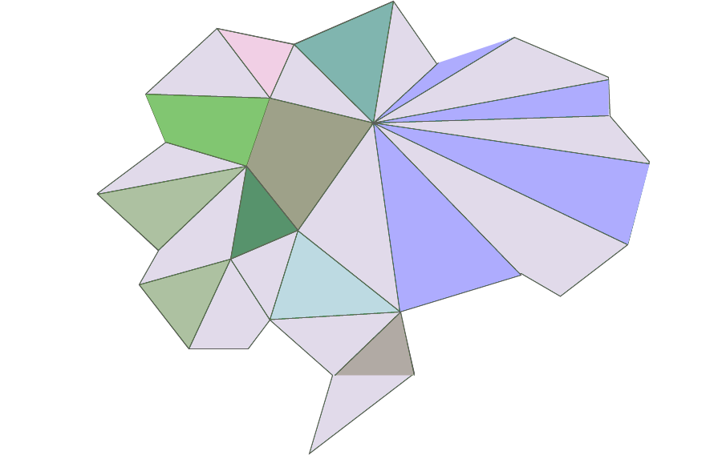
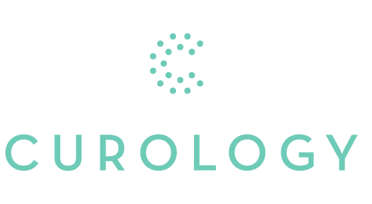
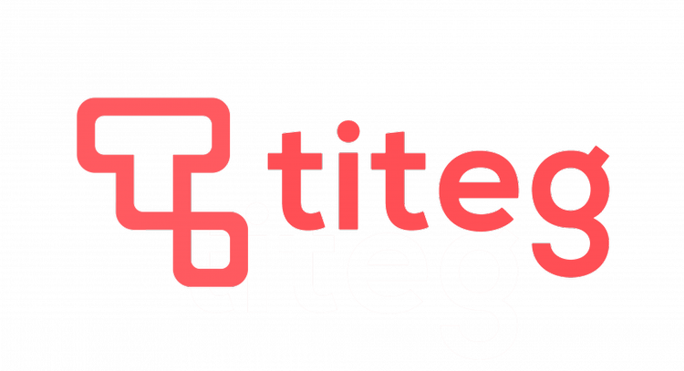

Fractional / Virtual CTO
Technical leadership from MVP to launch — architecture, hiring, and delivery as the entire technical side of a business.

Brain SurpriseBrain Surprise · Oakland, CA
We take your vision — whether it's an idea or a vibecoded MVP — and turn it into a mature, production-ready product.
I'm Rob Froetscher, founder of Brain Surprise. I love working at the intersection of human and computer problems, striving for clear, concise solutions where people let computers do what they do best. Our projects add value immediately, with minimal complexity, and stay easy to change as the business changes.
We have deep experience building web applications from the ground up and years of expertise making big data accessible. I've served as a fractional CTO from MVP to launch — owning architecture, hiring, and delivery as the entire technical side of a business — and we've partnered with existing engineering teams to carve out and own essential infrastructure and product pieces.
Lately a lot of our work is AI-first: helping teams adopt LLMs and agents in earnest, and structuring engineering orgs and codebases so AI accelerates them instead of adding chaos.
I started in marketing, spent years as a growth engineer at Lumosity, then moved to its data-engineering team — co-writing an open-source project to help employees access data and working on the company's big-data pipeline. I founded Brain Surprise in 2017, and today I lead a team that has served companies from healthcare to commodities to telecommunications.
Technical leadership from MVP to launch — architecture, hiring, and delivery as the entire technical side of a business.
Adopting LLMs and agents in earnest, and shaping engineering orgs and codebases so AI accelerates the team rather than adding chaos.
Full-stack products built from the ground up, designed to add value immediately and stay easy to change.
Pipelines and platforms that turn raw data into insight your whole team can actually use.
Systems that hold up under real load, built on solid distributed-systems foundations.
Secure, audited infrastructure for healthcare and other regulated industries.
Deep, hands-on expertise across both major clouds and serverless architectures.
The incisive, deep questions early-stage companies need answered when defining scope. We ask them.


Again and again, we have seen Brain Surprise add immediate value to our application while staying within budget and keeping a forward-looking eye on where we are going as a business.
...they built the foundation of our data-engineering platform and have since expanded their work to help us level up our growth-engineering stack. Through their work, we were able to gain critical new insights from our data as well as automate and scale our marketing analytics.
We recommend them without reservation to any other company looking to work with a versatile software development team.
As consultants, they have a strong sense of ownership and can deliver projects on time and in scope with very little direction and oversight. Coupled with their significant background in the modern data ecosystem and ability to ask deep, incisive questions in defining project scope, this is extremely valuable to early-stage companies.